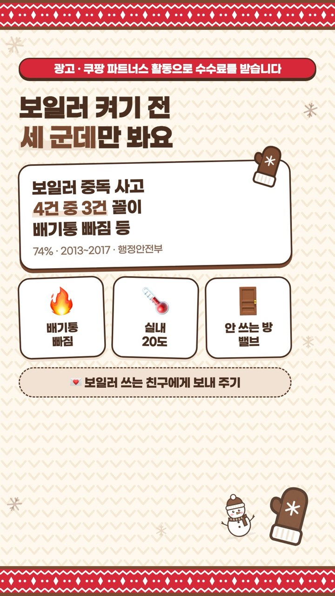

22번 영상
가스보일러 사고 4건 중 3건이 배기통 탓 중독 켜기 전에 봤어요?
광고 이 게시물은 쿠팡 파트너스 활동의 일환으로, 이에 따른 일정액의 수수료를 제공받습니다.
영상에서 비교한 3가지예요. 누르면 쿠팡 검색 결과로 가요.
영상 속 비교표 바로 보기 ↓보일러 켜기 전 세 군데만 봐요
보일러 중독 사고 4건 중 3건 꼴이 배기통 빠짐 등
74% · 2013~2017 · 행정안전부
배기통부터 봐요
⚠ 이상하면 직접 고치지 말고 가스 공급사·시공업체에
- 배기통
- 💡 중독 사고 74%가 배기관 빠짐 등
- ✔ 처짐·천장 그을음 없는지
- 보일러 가스가 빠져나가는 관
- 실내온도 20도
- 💡 1도 낮추면 약 7% 아껴요
- ✔ 실내온도 모드 20도
- 안 쓰는 방 밸브·외출모드
- 💡 안 쓰는 방은 잠그래요
- ✔ 방마다 밸브 손잡이 위치
출처: 행정안전부(2018.11) · 한국에너지공단 · 정책브리핑(2024.12)
